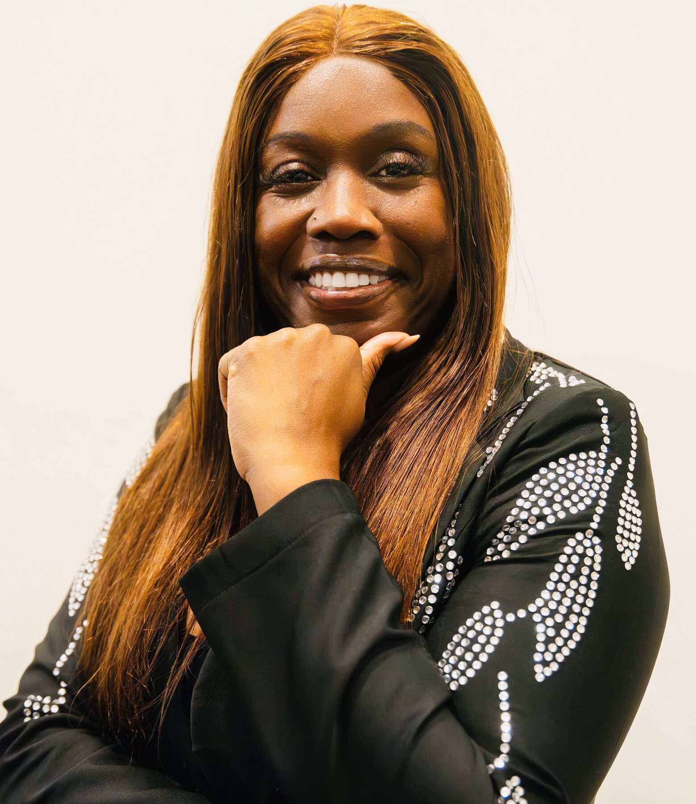
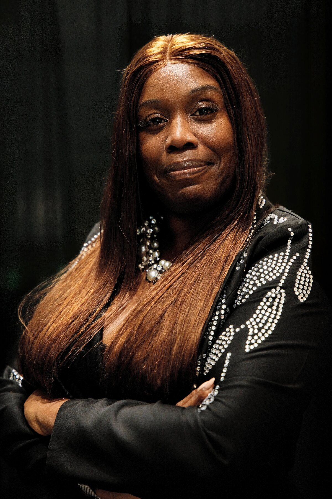

Conversations
Thoughtful dialogue and stories that deserve a wider audience.
COMING INTO FOCUSCO-HOST · B3U PODCAST
Meet Pat Smith—bringing honesty, heart, and perspective to every room and every conversation.

VOICE · VISION · BECOMING
MORE THAN A CO-HOST
Pat brings the kind of presence that makes people lean in. On the B3U Podcast, she adds curiosity, warmth, and an unfiltered point of view to conversations about growth, healing, purpose, and becoming unstoppable.
This is her space beyond the mic: a home for the ideas she is developing, the people she is connecting with, and the next chapter she is building in public.
“The best conversations don't just give you answers. They help you ask better questions.”

AT THE MICROPHONE
B3U makes room for the conversations people carry but do not always say out loud. Alongside Dr. Bree Charles, Pat helps explore the stories, turning points, and truths that shape who we become.
Explore the podcast ↗Thoughtful dialogue and stories that deserve a wider audience.
COMING INTO FOCUSLive events, guest features, community moments, and collaborations.
BOOKING SOONOriginal projects created with purpose, personality, and room to grow.
STAY CLOSEFIRST TO KNOW
Join Pat's email circle for new projects, appearances, B3U moments, and personal notes—sent with intention, never noise.